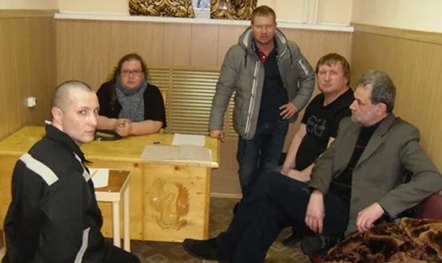
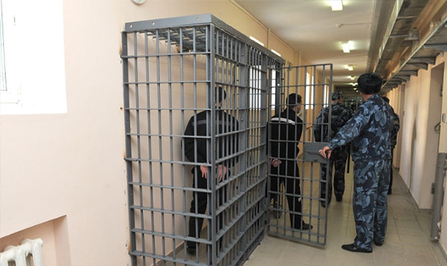

Понятие судимости
Обвинительный приговор с применением наказания порождает особые уголовно-правовые последствия — состояние судимости.
ЦИТАТА
Судимость — это правовое состояние лица, обусловленное фактом осуждения и назначения ему по приговору суда наказания за совершенное преступление и влекущее при повторном совершении этим лицом преступления установленные уголовным законодательством правовые последствия.
Большинство авторов считают судимость одной из форм реализации уголовной ответственности и неотъемлемым признаком уголовного наказания. В соответствии с данным подходом судимость включает две временные составляющие — во время отбывания наказания (правовой статус осужденного) и после отбытия наказания (правовой статус лица, отбывшего наказание). Однако ряд исследователей убеждены, что судимость является независимым от уголовного наказания правовым институтом. Так, объем правоограничений при судимости не находятся в зависимости от совершенного преступления и личности преступника; состояние судимости существует при условном осуждении и отсрочке отбывания наказания; срок судимости может быть продлен судом, что невозможно в отношении наказания. Сама по себе судимость не является наказанием, а лишь последствием применения наказания.
Определим цели судимости.
1. Превентивная (воспитательная) цель: желание избежать негативных последствий, которые влечет судимость, должна быть одним из факторов, удерживающих лицо от совершения преступления. Так, состояние судимости учитывается при рецидиве преступлений: если осужденный не исправился и, имея судимость, вновь совершил преступление, то ему будет назначено более суровое наказание. Уголовная статистика, тем не менее, указывает на то, что судимость, к сожалению, на практике не является сдерживающим фактором для рецидивной преступности, а ограничения в период судимости многими лицами, отбывшими наказание, не считаются обременительными.
2. Обеспечение безопасности: установление судимости для лица, отбывшего наказание, позволяет не допустить лиц, способных совершить преступление, в некоторые значимые сферы общественной жизнедеятельности — в правоохранительную деятельность, в образование, на государственную службу и т. п. Негативной стороной реализации данной цели является «наложение клейма» на лицо, отбывшее наказание: с одной стороны, статус судимого является справедливым последствием совершения лицом преступления, с другой — стигматизирует судимых, превращает их в изгоев, чем только укрепляет в них неприязнь к обществу.
3. Негативистская цель: порицание лица, совершившего преступление, со стороны государства и общества, выражение негативного отношения к системе ценностей, которых придерживается это лицо.
Ряд авторов выделяет также адаптационно-ресоциализационную цель судимости, подразумевающую создание условий для исправления осужденного и его возвращения к законопослушной жизни. Однако эта цель критикуется многими специалистами: во-первых, наложение массы запретов в значимых областях жизни не способствует возвращению лица к нормальной жизни; во-вторых, на практике эта цель оказывается недостижимой. Согласно статистике, доля лиц, совершивших преступление в состоянии судимости, очень высока. По факту судимость остается одним из способов дополнительного наказания преступника, а не его исправления.
С наступлением судимости для лица, отбывшего наказание, наступают следующие последствия:
1) уголовно-правовые:
- при рецидиве преступлений судимость учитывается в качестве отягчающего обстоятельства (п. «а» ч. 1 ст. 63 УК РФ) и влечет за собой особый порядок назначения наказания (ст. 68 УК РФ);
- судимость препятствует освобождению лица от уголовной ответственности (ч. 1 ст. 75, ст. 76 УК РФ);
- судимость за преступления определенной категории увеличивает размер фактически отбытого осужденным срока для решения вопроса о его условно-досрочном освобождении (п. «б» и «в» ч. 3 ст. 79 УК РФ);
- судимость за преступление определенной тяжести влияет на исчисление сроков давности обвинительного приговора (ч. 1 ст. 83 УК РФ);
- осуждение за преступление определенной тяжести влияет на выбор судом вида исправительного учреждения для отбывания лицом назначенного наказания (ст. 58 УК РФ);
- судимость за преступления определенных категорий влечет установление административного надзора за лицами, освобожденными из мест лишения свободы.
2) общеправовые:
- судимость (в том числе погашенная или снятая) влечет запрет занятия определенных должностей и занятия определенными видами деятельности: государственную и правоохранительную службу (должности судей, прокурорских работников, сотрудников ОВД и следователей, и др.), педагогическую деятельность, деятельность в сфере соцзащиты, а также спорта, культуры и искусства с участием несовершеннолетних;
- судимость влечет ограничение пассивного избирательного права (права быть избранным) в представительные органы;
- судимость влечет ограничения при приобретении оружия, доступе к государственной тайне, выезде за границу, возможности быть опекуном и усыновителем, желании быть призванным на военную службу и др.
Исследователи отмечают следующую проблему: значительная доля ограничений, связанных с судимостью, имеет не временный, а пожизненный характер. С одной стороны, ряд пожизненных ограничений для судимых лиц можно считать справедливыми (например, запрет работать с несовершеннолетними для лиц, судимых за преступления против половой неприкосновенности несовершеннолетних), с другой — ст. 86.6 УК РФ установила, что погашение или снятие судимости аннулирует все правовые последствия, связанные с судимостью, но это не соответствует действительности. После погашения судимости лицо считается несудимым, однако факт судимости сам по себе остается «черной меткой» на всю оставшуюся жизнь, даже если человек исправился и давно ведет достойный образ жизни. Такой подход вступает в противоречие с целями уголовного наказания, а именно — стремлением вернуть преступника к законопослушной жизни. Факт наличия судимости у лица также на практике может повлиять на карьеру членов его семьи.
Сроки судимости
Судимость – это последствие не только осуждения, но и назначенного виновному наказания. Этим обусловлено прекращение судимости в двух формах — погашения и снятия, в определенных временных интервалах, связанных с видом и тяжестью наказания.
Ст. 86 УК РФ: «Лицо, осужденное за совершение преступления, считается судимым со дня вступления обвинительного приговора суда в законную силу до момента погашения или снятия судимости».
1) Погашение судимости подразумевает прекращение негативных последствий для лица автоматически (без решения суда) по истечении установленных законом сроков (ст. 86 УК РФ):
- испытательного срока в отношении лиц, условно осужденных;
- одного года после отбытия или исполнения наказания в отношении лиц, осужденных к более мягким видам наказаний, чем лишение свободы;
- трех лет после отбытия наказания в отношении лиц, осужденных к лишению свободы за преступления небольшой или средней тяжести;
- восьми лет после отбытия наказания в отношении лиц, осужденных к лишению свободы за тяжкие преступления;
- десяти лет после отбытия наказания в отношении лиц, осужденных за особо тяжкие преступления.
Если осужденный был досрочно освобожден от отбывания наказания или неотбытая часть наказания была заменена более мягким видом наказания, то срок погашения судимости исчисляется исходя из фактически отбытого срока наказания с момента освобождения от отбывания основного и дополнительного видов наказаний. Данная формулировка из УК РФ, по мнению исследователей, остается двусмысленной: неясно, с какого момента отсчитывать освобождение от наказания — с момента реального освобождения от исполнения наказания (например, с момента отбытия лицом 3 лет из изначально назначенных 5 лет лишения свободы) или с момента истечения неотбытой части наказания (по истечении назначенных 5 лет). Второй же вариант нелогичен и несправедлив— теряется суть досрочного освобождения от наказания как меры поощрения лица: его судимость будет истекать одновременно с лицом, отбывшим наказание в полном объеме, т.е. более опасным для общества лица. В судебной практике устоялся первый вариант истечения срока судимости при условно-досрочном освобождении — со дня освобождения осужденного из исправительного учреждения.
Неясным остается вопросы исчисления сроков погашения судимости в случаях, когда суд назначил лицу как основное, так и дополнительное наказание различной продолжительности. Возникает ситуация, при которой основное наказание лицом отбыто, а дополнительное наказание начинает или продолжает исполняться. С какого момента исчислять срок погашения судимости такому лицу? В законе однозначного ответа нет, а специалисты расходятся во мнениях: часть авторов предлагает брать отсчет с момента отбытия основного наказания, часть — с момента отбытия дополнительного наказания, некоторые предлагают закрепить отдельное течение сроков погашения судимости для основного и дополнительного наказания. Каждое из предложений небезупречно.
2) Снятие судимости подразумевает аннулирование негативных последствий судимости досрочно, до истечения срока ее погашения. В отличие от погашения, снятие судимости предполагает обязательным условием безупречное поведение осужденного лица (законопослушный образ жизни, возмещение вреда, причиненного преступлением). Снятие судимости осуществляется судом, как правило, по ходатайству лица, отбывшего наказание. Срок, по истечении которого может быть осуществлено право на досрочное снятие судимости после освобождения от наказания, в уголовном законе не определен.
С момента снятия судимости, как и ее погашения, лицо считается несудимым.